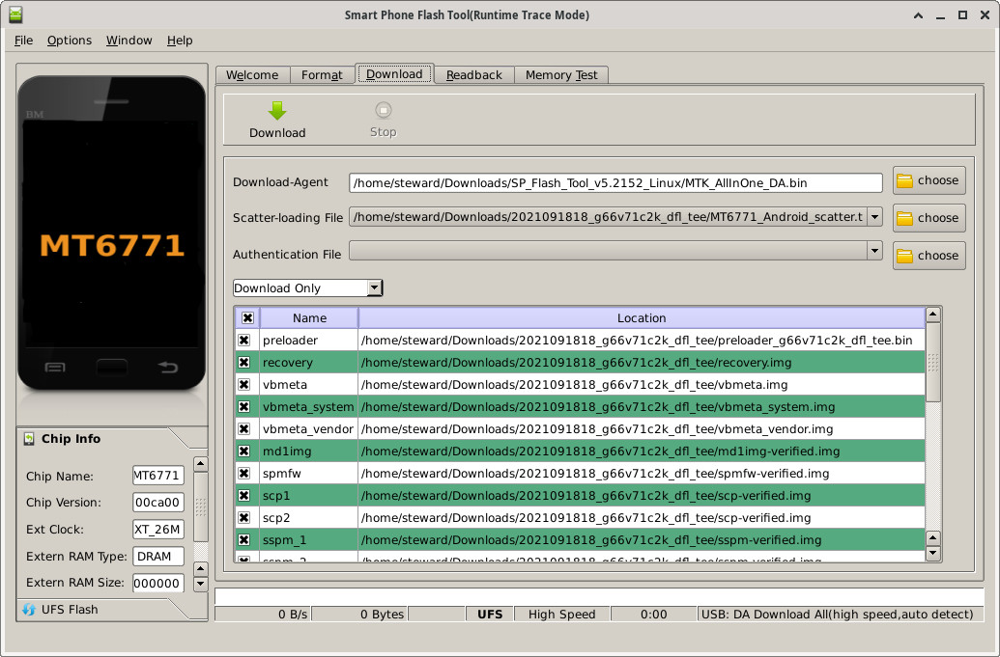
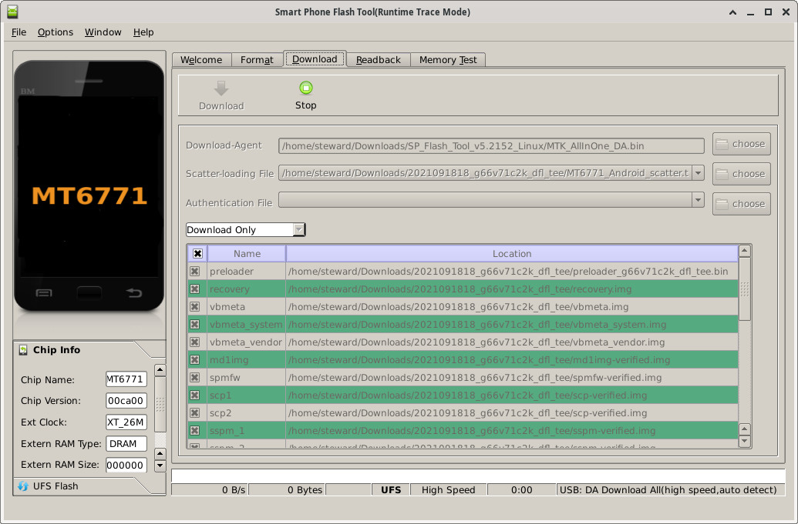
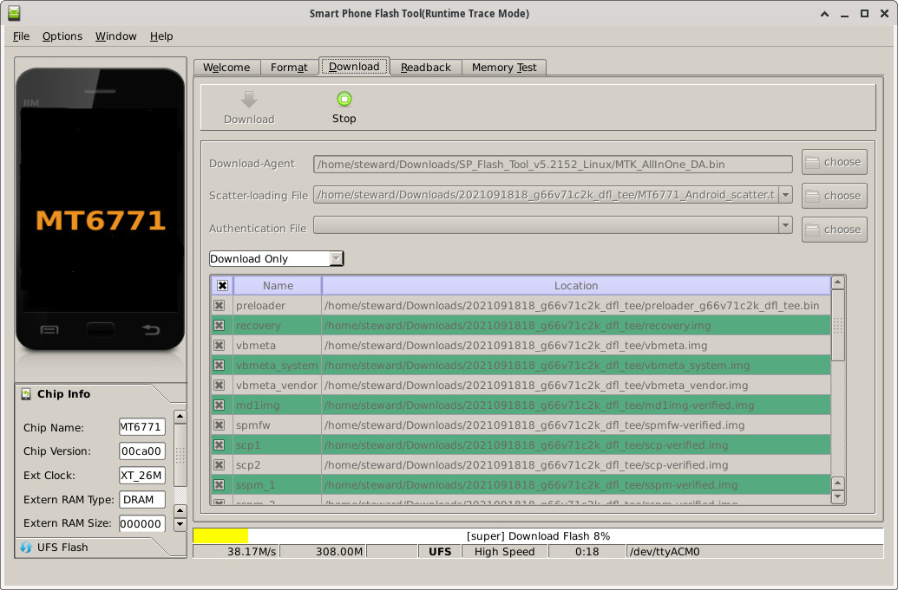

參考資訊：
https://drive.google.com/drive/folders/1gxDVmXsOnWKKeje-9bqrmIrEP0_J3kmj
步驟如下：
$ cd $ wget https://github.com/steward-fu/website/releases/download/titan-pocket/SP_Flash_Tool_v5.2152_Linux.zip $ unzip SP_Flash_Tool_v5.2152_Linux.zip $ wget https://github.com/steward-fu/website/releases/download/titan-pocket/2021091818_g66v71c2k_dfl_tee.zip $ unzip 2021091818_g66v71c2k_dfl_tee.zip $ cd SP_Flash_Tool_v5.2152_Linux $ sh ./flash_tool.sh
選擇MT6771_Android_scatter.txt


